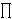
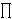

[Prethodna tema]
[Sljedeæa tema]
5.2.
Grupa E(Fq)
Sada æemo reæi nešto o najvažnijim svojstvima
eliptièkih krivulja definiranih nad konaènim poljima.
Krenimo s jednim primjerom.
Primjer: Promotrimo eliptièku krivulju
E : y2 = x3 + x + 3
nad poljem
 7.
7.
Odredimo elemente grupe
E(7). Uoèimo da su 0, 1, 2 i 4 svi kvadrati u polju
7.
Uvrštavamo x = 0, 1, 2, 3, 4, 5, 6 u jednadžbu
krivulje E, te dobivamo redom jednadžbe y2 =
3, 5, 6, 5, 1, 0, 1 u 7.
Zakljuèujemo da samo za x = 4, 5 i 6 pripadne jednadžbe
imaju rješenja. Konaèno dobivamo da je
E(7) =
{,
(4,1), (4,6), (5,0), (6,1), (6,6)}.
Odredimo sada strukturu grupe
E(7).
Uzmimo toèku P = (4,1) i izraèunajmo njezine višekratnike.
Imamo:
x([2] P) = 0 - 8 = 6,
y([2] P) = - 1 + 0 = 6,
x([3] P) = ((6 - 1)/(6 - 4))2 - 4 - 6 =
(5 4)2
- 10 = 5,
y([3] P) = - 1 + (4 - 5)(6 - 1)/(6 - 4) = 0,
[4] P = (6,1),
[5] P = (4,6),
[6] P = .
Dakle, E(7)
je ciklièka grupa reda 6, a toèka P joj je generator.
Neka je E eliptièka krivulja nad konaènim poljem
.
Postavlja se pitanje što se opæenito može reæi o grupi
E().
Jasno je da za broj elementa na eliptièkoj krivulji vrijedi
#E()
2q + 1.
Naime, imamo jednu toèku u beskonaènosti, a pored toga svakom
od q moguæih x-eva odgovaraju najviše dva y-a.
No, samo pola elemenata od
imaju kvadratni korijen (to su toèno oni elementi koju su oblika
g2n, gdje je g
generator grupe
*), pa možemo oèekivati da æe
broj #E()
biti približno jednak q + 1. Ovo razmatranje je
precizirano u sljedeæem važnom teoremu.
|
Teorem: (Hasse)
|q + 1 - #E()|
2 q
|
Velièina t definirana sa
#E()
= q + 1 - t naziva se Frobeniusov trag
od E u q. Prema Hasseovom teoremu je
|t|
2 q.
Za eliptièke krivulje nad
 tvrdnja Hasseovog teorema je najbolja moguæa, u smislu da
za svaki prirodan broj n iz intervala
(p + 1 - 2
p,
p + 1 + 2
p)
postoji eliptièka krivulja reda n. Štoviše,
unutar manjeg intervala
(p + 1 -
p,
p + 1 +
p)
redovi su gotovo uniformno distribuirani. Ova èinjenica je
jako važna za neke od primjena eliptièkih krivulja, kao što
faktorizacija velikih prirodnih brojeva, te dokazivanje
prostosti.
tvrdnja Hasseovog teorema je najbolja moguæa, u smislu da
za svaki prirodan broj n iz intervala
(p + 1 - 2
p,
p + 1 + 2
p)
postoji eliptièka krivulja reda n. Štoviše,
unutar manjeg intervala
(p + 1 -
p,
p + 1 +
p)
redovi su gotovo uniformno distribuirani. Ova èinjenica je
jako važna za neke od primjena eliptièkih krivulja, kao što
faktorizacija velikih prirodnih brojeva, te dokazivanje
prostosti.
Napomenimo da raèunanje reda grupe
E()
za velike brojeve q nije sasvim jednostavan problem.
Prvi polinomijalni algoritam za raèunanje
#E()
dao je Schoof 1995. godine.
Broj operacija u tom algoritmu je bio O(log8q).
Kasnije su Atkin i
Elkies poboljšali Schoofov algoritam,
tako da se danas broj
#E()
može efikasno izraèunati za brojeve q s do 500 znamenaka.
Pretpostavimo sada da imamo eliptièku krivulju E
zadanu nad  .
Bez smanjenja opæinosti možemo pretpostaviti da su joj
koeficijenti cjelobrojni. Stoga za svaki prosti broj p
možemo promatrati ostatke tih koeficijenata pri djeljenju
s p. Na taj naèin æemo dobiti krivulju
nad
koja æe biti eliptièka ukoliko je nesingularna, a to æe biti
ukoliko p ne dijeli diskriminantu D od E.
Podsjetimo se da je jedno od važnih pitanja vezanih uz
eliptièke krivulje nad odreðivanje njihovog ranga. Jedna od najpoznatijih
i najvažnijih slutnji u matematici jest
Birch -
Swinnerton-Dyerova slutnja
koja povezuje rang eliptièke krivulje nad
s brojem toèaka na toj istoj krivulji kad se ona
promatra nad konaènim poljem .
Ugrubo reèeno, za eliptièku krivulju velikog ranga bi brojevi
#E()
trebali biti relativno veliki za mnogo prostih brojeva p.
Preciznije, 
(#E() / p),
gdje se produkt uzima po svim prostim brojevima p
koji ne dijele diskriminantu, a manji su od realnog broja X,
je proporcionalan sa (log X)r,
gdje je r upravo rang krivulje E.
Još preciznija formulacija Birch - Swinnerton-Dyerove slutnje
je preko tzv. L-funkcija, te kaže da je rang jednak redu
nultoèke jedne analitièke funkcije koja se definira pomoæu
brojeva #E().
.
Bez smanjenja opæinosti možemo pretpostaviti da su joj
koeficijenti cjelobrojni. Stoga za svaki prosti broj p
možemo promatrati ostatke tih koeficijenata pri djeljenju
s p. Na taj naèin æemo dobiti krivulju
nad
koja æe biti eliptièka ukoliko je nesingularna, a to æe biti
ukoliko p ne dijeli diskriminantu D od E.
Podsjetimo se da je jedno od važnih pitanja vezanih uz
eliptièke krivulje nad odreðivanje njihovog ranga. Jedna od najpoznatijih
i najvažnijih slutnji u matematici jest
Birch -
Swinnerton-Dyerova slutnja
koja povezuje rang eliptièke krivulje nad
s brojem toèaka na toj istoj krivulji kad se ona
promatra nad konaènim poljem .
Ugrubo reèeno, za eliptièku krivulju velikog ranga bi brojevi
#E()
trebali biti relativno veliki za mnogo prostih brojeva p.
Preciznije, 
(#E() / p),
gdje se produkt uzima po svim prostim brojevima p
koji ne dijele diskriminantu, a manji su od realnog broja X,
je proporcionalan sa (log X)r,
gdje je r upravo rang krivulje E.
Još preciznija formulacija Birch - Swinnerton-Dyerove slutnje
je preko tzv. L-funkcija, te kaže da je rang jednak redu
nultoèke jedne analitièke funkcije koja se definira pomoæu
brojeva #E().
Za razliku od sluèaja eliptièkih krivulja nad
,
gdje je otvoreno pitanje koji su sve rangovi moguæi,
u sluèaju polja poznato je
da je pripadna grupa ili ciklièka ili produkt dvije ciklièke grupe.
Preciznije, vrijedi
E()
 d
×
e,
d
×
e,
gdje d | e i
d | q - 1 (što ukljuèuje i moguænost
da je d = 1).
U dosadašnjim razmatranjima, mi smo se uglavnom ogranièili na
eliptièke krivulje nad poljima karakteristike razlièite od 2 i 3.
Meðutim, kako su za primjene u kriptografiji od velike važnosti
eliptièke krivulje nad konaènim poljima karakteristike jednake 2,
sada æemo reæi nešto o njima.
Svaka eliptièka krivulja nad poljem
,
gdje je q = 2m, može se
transformirati u jedan od sljedeæa dva oblika
y2 + cy = x3 +
ax + b ili
y2 + xy = x3 +
ax2 + b.
Meðutim, krivulje prvog oblika su tzv. supersingularne krivulje,
koje nisu, iz razloga koje æemo kasnije objasniti,
od interesa kod primjene u kriptografiji. Stoga se možemo
usredotoèiti na krivulje drugog oblika. Pritom je
b proizvoljan ne-nul element iz
,
dok za a imamo samo dvije bitno razlièite (koje daju
neizomorfne krivulje) moguænosti: a = 0 ili
a = ,
gdje je
neki fiksirani element iz
sa svojstvom da je Tr() =
+
2 +
4 +
... +
2 = 1.
Ako je m neparan, onda možemo uzeti da je
= 1.
= 1.
Ako je m neparan, onda možemo uzeti da je
= 1.
Navedimo još formule za zbrajanje toèaka na eliptièkoj
krivulji zadanoj jednadžbom
y2 + xy = x3 +
ax2 + b
nad poljem karakteristike 2.
Ako je P = (x1, y1) i
Q = (x2, y2),
onda je
-P = (x1, x1 +
y1),
x(P + Q) = ((y2 +
y1) /
(x2 + x1))2
+ (y2 +
y1) /
(x2 + x1)
+ a + x1 + x2,
y(P + Q) = y1 +
x(P + Q) +
(x1 + x(P + Q))
(y2 +
y1) / (x2 + x1),
x([2]P) =
((x12 + y1) /
(x1))2 +
(x12 + y1) /
(x1) + a,
y([2]P) = y1 +
x([2]P) +
(x1 + x([2]P))
(x12 + y1) /
(x1).
Zadatci:
- Neka je eliptièka krivulja E zadana jednadžbom
y2 = x3 - x.
Odredite #E()
za q = 3, 5, 7, 9, 11.
- Prema Hasseovom teoremu, red grupe eliptièke krivulje nad poljem
5
je jedan od brojeva n = 2, 3, ... , 10.
Za svaki od moguæih n-ova, pronaðite jednu eliptièku
krivulju nad
5
èiji je red upravo jednak n.
[Prethodna tema]
[Sljedeæa tema]